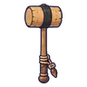 ค้อนยักษ์ตอกหมุดเต็นท์ | 1 | 77 | ไม่มีธาตุ | ค้างคาวคลื่นเสียง 0.25% |
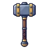 ค้อนศิลา | 1 | 72 | ไม่มีธาตุ | อาวุธเริ่มต้นของสาย (ได้ตอนเปลี่ยนอาชีพ) |
 ค้อนยักษ์มาร์ชเมลโลว์ปิ้ง ค้อนยักษ์มาร์ชเมลโลว์ปิ้ง | 5 | 73 | ไม่มีธาตุ | แมลงปอไพลิน ร่างสายรุ้ง 0.12% |
 ค้อนยักษ์ลูกโอ๊ก ค้อนยักษ์ลูกโอ๊ก | 7 | 81 | ดิน | มดขุดอุโมงค์ 0.25% |
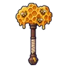 ค้อนยักษ์รวงผึ้ง | 8 | 81 | ดิน | โกเลมรวงผึ้ง ร่างขี้ผึ้งฟ้า 0.5% |
 ค้อนยักษ์กบพองแก้ม ค้อนยักษ์กบพองแก้ม | 11 | 70 | น้ำ | กบบึงใส 0.06% |
 ค้อนยักษ์เปลือกหอยทาก ค้อนยักษ์เปลือกหอยทาก | 13 | 77 | ไม่มีธาตุ | ทากพิษแตกตัว 0.25% |
| ค้อนยักษ์สไลม์เรืองแสง | 16 | 70 | พิษ | สไลม์เรืองแสง 0.06% |
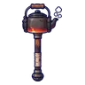 ค้อนยักษ์กาต้มน้ำ | 19 | 73 | ไฟ | ตอไม้ถ่านคุ 0.12% |
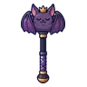 ค้อนยักษ์ราชาค้างคาวหลับ | 24 | 95 | มืด | ราตรีราชาค้างคาว 0.5% |
 ค้อนยักษ์ช่างตีเหล็ก ค้อนยักษ์ช่างตีเหล็ก | 27 | 130 | ไม่มีธาตุ | กองกระดูกแตกตัว 0.25% |
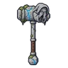 ค้อนยักษ์รูปปั้นร้องไห้ | 28 | 116 | ดิน | รูปปั้นร้องไห้ ร่างหยกร้าว 0.24% |
 ค้อนยักษ์กลองศึก ค้อนยักษ์กลองศึก | 29 | 116 | ไม่มีธาตุ | โครงกระดูกพลธนู 0.12% |
 ค้อนยักษ์ท่อนซุง ค้อนยักษ์ท่อนซุง | 31 | 123 | ไม่มีธาตุ | ตอไม้ผี 0.25% |
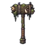 ค้อนยักษ์โทรลใต้สะพาน | 32 | 151 | น้ำ | โทรลใต้สะพาน 0.03% |
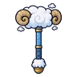 ค้อนยักษ์เขาแกะเมฆ | 34 | 116 | ลม | แกะเมฆเขาม้วน 0.12% |
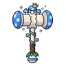 ค้อนยักษ์ราชาเห็ดเรืองแสง | 36 | 151 | พิษ | ราชาเห็ดเรืองแสง 0.5% |
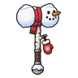 ค้อนยักษ์ตุ๊กตาหิมะ | 38 | 116 | น้ำ | แพะภูเขา 0.12% |
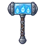 ค้อนยักษ์ดวงไฟผี | 39 | 111 | วิญญาณ | ผีดวงไฟ 0.06% |
 ค้อนยักษ์กระดูกต้นขา ค้อนยักษ์กระดูกต้นขา | 41 | 126 | ไม่มีธาตุ | โครงกระดูกทหาร 0.25% |
 ค้อนยักษ์เตาถ่าน ค้อนยักษ์เตาถ่าน | 43 | 111 | ไฟ | ตอไม้ถ่านคุ 0.06% |
 ค้อนยักษ์นาฬิกาปลุก ค้อนยักษ์นาฬิกาปลุก | 45 | 116 | ไม่มีธาตุ | แมงป่องยิงพิษ 0.12% |
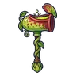 ค้อนยักษ์หม้อข้าวหม้อแกงลิง | 46 | 111 | พิษ | จระเข้หนองพิษ 0.06% |
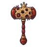 ค้อนยักษ์รังนางพญามด | 48 | 151 | ดิน | รังนางพญามด 0.5% |
 ค้อนยักษ์ทั่งตีเหล็ก ค้อนยักษ์ทั่งตีเหล็ก | 52 | 178 | ไม่มีธาตุ | ค้างคาวผลึก 0.25% |
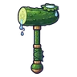 ค้อนยักษ์แตงกวากัปปะ | 54 | 159 | น้ำ | กัปปะหนองหมอก 0.12% |
 ค้อนยักษ์นาฬิกาทราย ค้อนยักษ์นาฬิกาทราย | 57 | 159 | ไม่มีธาตุ | ผีพายุทราย 0.12% |
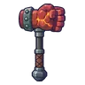 ค้อนยักษ์หมัดโกเลม | 60 | 176 | ดิน | โกเลมหินแดง 0.25% |
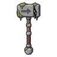 ค้อนยักษ์หลักไมล์ | 60 | 159 | ดิน | หลักไมล์เดินได้ 0.12% |
 ค้อนยักษ์ขวดลมหมุน ค้อนยักษ์ขวดลมหมุน | 62 | 152 | ลม | ภูตลมหมุน 0.06% |
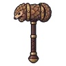 ค้อนยักษ์ตัวนิ่มขดตัว | 64 | 159 | ไม่มีธาตุ | ไดโนจิ๋วจ่าฝูง 0.12% |
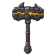 ค้อนยักษ์หัวใจเถ้าถ่าน | 66 | 208 | ไฟ | ยักษ์เถ้าถ่าน 0.03% |
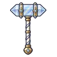 ค้อนยักษ์ปริซึมคริสตัล | 66 | 152 | ศักดิ์สิทธิ์ | โกเลมหินแดง 0.06% |
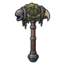 ค้อนยักษ์เต่าคูเมือง | 68 | 173 | น้ำ | เต่าคูเมืองหัวเหล็ก ร่างหยก 0.5% |
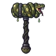 ค้อนยักษ์งูหนองพิษ | 69 | 159 | พิษ | งูหนองพิษ 0.12% |
 ค้อนยักษ์จันทร์เพ็ญ ค้อนยักษ์จันทร์เพ็ญ | 72 | 152 | มืด | มดทหาร 0.06% |
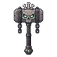 ค้อนยักษ์ศิลาสุสาน | 74 | 208 | วิญญาณ | บัลลังก์ราชาสุสาน 0.5% |
 ค้อนยักษ์ไททัน ค้อนยักษ์ไททัน | 77 | 213 | ไม่มีธาตุ | หุ่นระฆัง 0.25% |
 ค้อนยักษ์แกนโกเลมลาวา ค้อนยักษ์แกนโกเลมลาวา | 80 | 220 | ไฟ | โกเลมลาวา 0.25% |
 ค้อนยักษ์ทองคำแท่ง ค้อนยักษ์ทองคำแท่ง | 83 | 202 | ไม่มีธาตุ | ดาวตกจิ๋ว 0.12% |
 ค้อนยักษ์ยอดเขา ค้อนยักษ์ยอดเขา | 84 | 220 | ไม่มีธาตุ | มือหุ่นยักษ์ 0.25% |
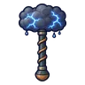 ค้อนยักษ์เมฆพายุ | 86 | 194 | ลม | ระฆังจิ๋วระเบิด 0.06% |
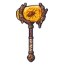 ค้อนยักษ์อำพันโบราณ | 88 | 202 | ดิน | โกเลมอำพัน ร่างอำพันเขียว 0.24% |
 ค้อนยักษ์ไดโนหัวโขก ค้อนยักษ์ไดโนหัวโขก | 88 | 202 | ไม่มีธาตุ | แร็พเตอร์ใบไม้ 0.12% |
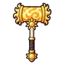 ค้อนยักษ์ดวงอาทิตย์ | 90 | 194 | ศักดิ์สิทธิ์ | ผู้เฝ้าพื้นแก้ว 0.06% |
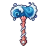 ค้อนยักษ์คลื่นซัด | 92 | 194 | น้ำ | ไดโนจิ๋วจ่าฝูง 0.06% |
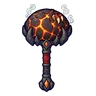 ค้อนยักษ์ไข่มังกรลาวา | 95 | 264 | ไฟ | หัวใจมังกรลาวา 0.5% |
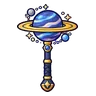 ค้อนยักษ์ตำนานดาวเคราะห์วงแหวน | 99 | 286 | มืด | ดรอปทั่วโลก Lv 90+ |